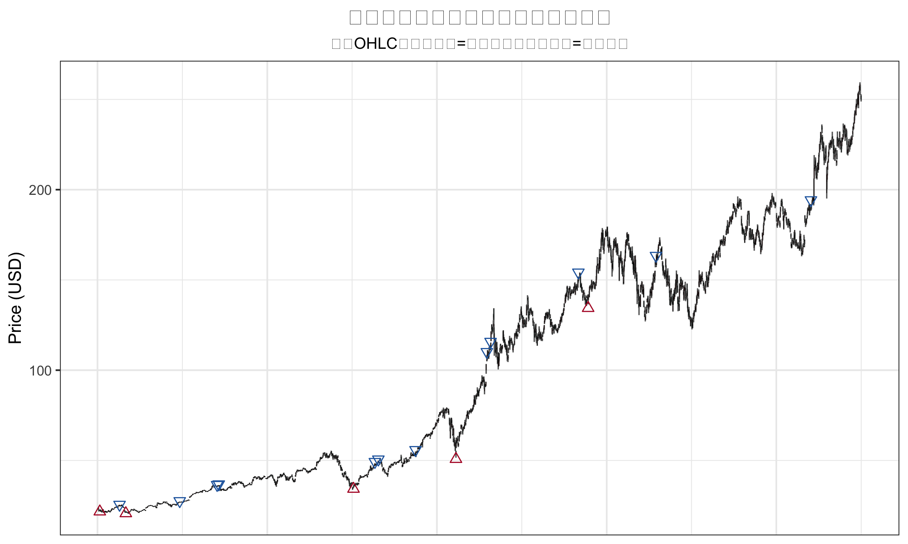
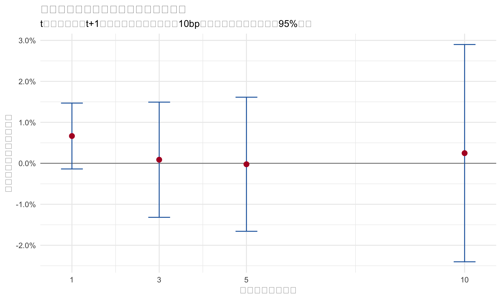

蜡烛图与波段结构
问题现场
完整行情之后，峰谷和“第几浪”往往清晰；实时交易中，最新高低点尚未确认，ZigZag端点会随新价格移动。若把最终确认的峰谷回填到拐点日回测，就会得到无法交易的完美信号。本章把波浪叙事降维为可审计的波段位置。
学习目标
- 区分事后波浪标注与实时波段变量；
- 理解ZigZag确认滞后和端点重绘；
- 用滚动区间位置近似波段极端；
- 将锤子/流星与波段位置组合；
- 设计不回填峰谷的验证方案。
经典形态与市场机制
艾略特波浪理论用推动与调整序列描述市场群体行为。它提供丰富的结构语言，但实际计数存在尺度选择和多种可接受标注。蜡烛图可被用作候选波段结束的细粒度信号，例如滚动低位的锤子或滚动高位的流星。
本书不把主观浪数直接编码成标签。ZigZag仅用于事后可视化和研究候选生成；实时主信号使用截至当日的60日区间位置，避免未来确认。
可计算定义
区间位置 \(p_t\) 沿用第蜡烛图与百分比回撤水平章。若 \(p_t<0.15\) 且出现锤子，记+1；若 \(p_t>0.85\) 且出现流星，记-1。ZigZag用价格反向超过阈值 \(\delta\) 才确认前一极点，因此极点的“发生日”与“可知日”不同。
实时使用ZigZag时，信号应放在确认日，而不是极点日。若反向阈值为10%，低点只有在随后上涨10%后才被确认，不能假设在低点当天成交。
研究设计
主实验使用安全的滚动位置规则。ZigZag只作为对照：记录极点日、确认日和确认滞后。稳健性一：区间窗口40、60、120日；稳健性二：极端阈值10%、15%、20%；稳健性三：在信号后再加入确认会牺牲多少收益，防止把事后结构当实时优势。
R实现
panel <- lab_read_data()
zigzag_r <- eTTR::add_zig_zag(
panel, change = 10, percent = TRUE, lastExtreme = TRUE
)
features <- lab_features()
signals <- lab_base_signals()
signal_r <- ifelse(
signals$hammer > 0 & features$range_position_60 < 0.15, 1,
ifelse(signals$shooting < 0 & features$range_position_60 > 0.85, -1, 0)
)add_zig_zag() 的最终端点可变化，因此不直接进入主回测。函数调用保留用于展示和计算确认滞后。
Python实现
from python.candlestick_lab import load_data, pattern_signal
import numpy as np
from ettr import zigzag
panel = load_data()
zigzag_panel = zigzag(panel, change=10, pct=True, last_extreme=True)
high_60 = panel["high"].rolling(60).max()
low_60 = panel["low"].rolling(60).min()
position = (panel["close"] - low_60) / (high_60 - low_60)
signal_py = np.where(
(pattern_signal("hammer").to_numpy() > 0) & (position < 0.15), 1,
np.where((pattern_signal("shooting").to_numpy() < 0) & (position > 0.85), -1, 0),
)Python zigzag() 的 last_extreme=True 会延伸最新端点，适合画图，不适合把最后极点视为已确认交易标签。
图形诊断

图上同时标出滚动区间与事后ZigZag时，应使用不同符号，并明确后者不可实时获得。漂亮的波浪计数不能替代确认时点记录。
证据与稳健性
| sample | events | mean_gross | mean_net | win_rate | ci_low | ci_high |
|---|---|---|---|---|---|---|
| 全部事件 | 24 | 0.0008 | -0.0002 | 0.3750 | -0.0166 | 0.0161 |
| 非重叠事件 | 23 | -0.0013 | -0.0023 | 0.3478 | -0.0189 | 0.0143 |

严格位置条件使样本很少，任何点估计都应谨慎。应报告信号在极点日与确认日成交的巨大差异，以展示回填偏差。若阈值变化导致结论反转，应保留参数敏感性而不是选择最顺眼的波浪尺度。
AI协作实验室
AI任务是追踪每个ZigZag端点的首次确认日期，并生成重绘日志。约束是端点日不得直接成为成交日。验收通过逐日扩展样本重新计算ZigZag，确认历史标签何时发生变化。
失效条件与常见误区
- 把最终ZigZag极点回填到历史当作实时信号；
- 在多种波浪计数中选择事后最合理的一种；
- 忽略尺度改变会重写浪数；
- 小样本仍给出精确胜率；
- 把图形解释当作价格生成因果。
本章小结与练习
波浪思想可以启发结构变量，但实时研究必须记录确认滞后。滚动位置虽然粗糙，却比事后完美峰谷更诚实。
- 逐日重算ZigZag并记录一个端点的重绘过程。
- 比较40、60、120日区间位置规则。
- 分别用极点日和确认日成交，量化回填偏差。
进入下一章前，请确认你能区分拐点发生日与可知日，并能拒绝使用会重绘的历史标签回测。